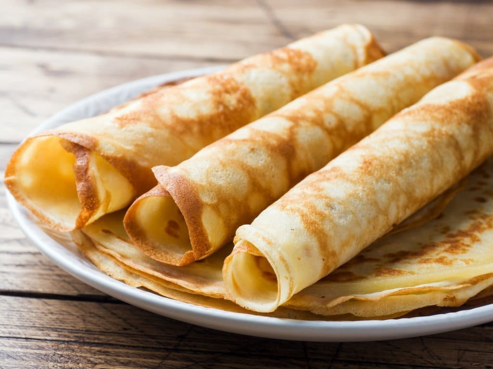

Catálogo de Receitas
Feito por André
Panqueca:

Ingredientes:
- 1 xícara (chá) de leite
- 1 colher (sopa) de óleo
- 1 pitada de sal
- 1 ovo
- 1 xícara (chá) de farinha de trigo.
Modo de Preparo:
- Bata todos os ingredientes no liquidificador.
- Unte uma frigideira com um pouco de margarina ou óleo, espere esquentar, despeje um pouco da massa, após assar um lado, vire.
- Retire da frigideira e sirva.